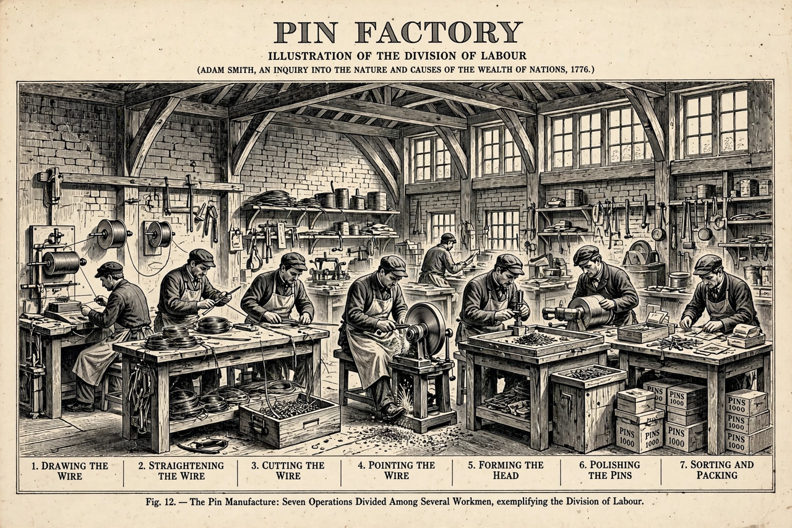

Labour theory of value
From Wikipedia, the free encyclopedia

The labour theory of value is a theory of value in classical economics holding that the economic value of a good or service is determined by the total amount of socially necessary labour required to produce it. Articulated by Adam Smith and David Ricardo and transformed by Karl Marx into the foundation of his critique of capitalism (with Surplus value extracted from labour power), it was displaced in mainstream economics by the marginalist revolution of the 1870s and subjective value theory.
Classical forms
Smith grounded value in labour commanded and embodied, with qualifications; Ricardo sought an invariable measure and located most value in embodied labour, rent aside. Marx distinguished concrete from abstract labour and use value from exchange value, distinguishing labour from labour power — the distinction that made surplus value (and exploitation despite 'equal' exchange) analytically possible.
Decline and afterlife
The 'transformation problem' — converting labour values into competitive prices of production — dogged Marxian economics (Bortkiewicz to Sraffa), while marginalism's supply-and-demand apparatus simply stopped asking the question. Modern echoes persist in embodied-energy and labour accounting, ecological economics' critiques of price, and debates over whether digital platforms extract uncounted labour value.